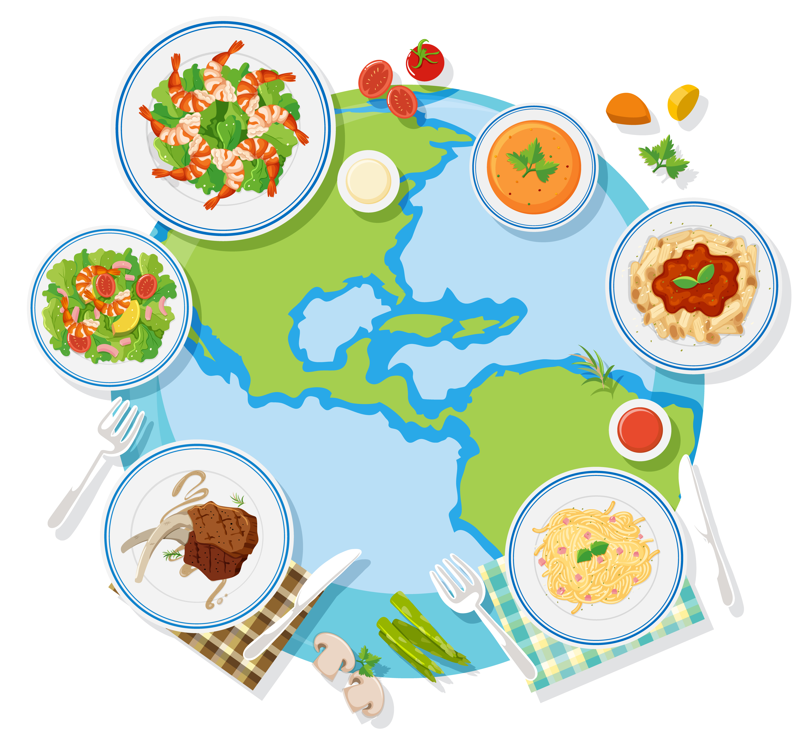

Tunisia
Shakshuka
Eggs gently cooked in a spiced tomato and pepper sauce, often served with bread for dipping.
Get the recipeA fansite for global cuisine
One table, different continents, endless flavor.

Food is the easiest way to travel without leaving home. Every dish carries a story: the climate it grew up in, the trade routes that brought its spices, and the families who passed it down. A bowl of Egyptian Koshari, a plate of grilled steak from the Texas-raised beef, or a bright shrimp salad from the Mediterranean coast each tells you something about the people who first made it.
On this site we share the recipes we love, fun facts about where they come from, and a gallery of dishes. Grab a fork, spoon, or chopsticks and dig in!
Tunisia
Eggs gently cooked in a spiced tomato and pepper sauce, often served with bread for dipping.
Get the recipeThailand
A hot broth with lemongrass, lime leaves, chili, and shrimp that wakes up every taste bud.
Get the recipeEgypt
A savory mix of rice, pasta, lentils, and chickpeas topped with a tangy tomato sauce and crispy onions.
Get the recipeMexico
Fresh shrimp "cooked" in lime juice with tomato, onion, cilantro, and avocado. Perfect on a hot day.
Get the recipe